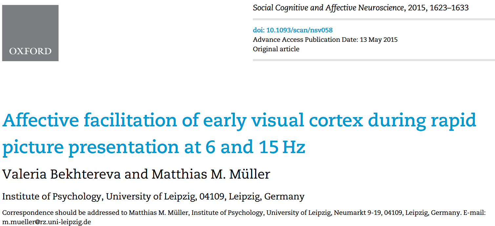
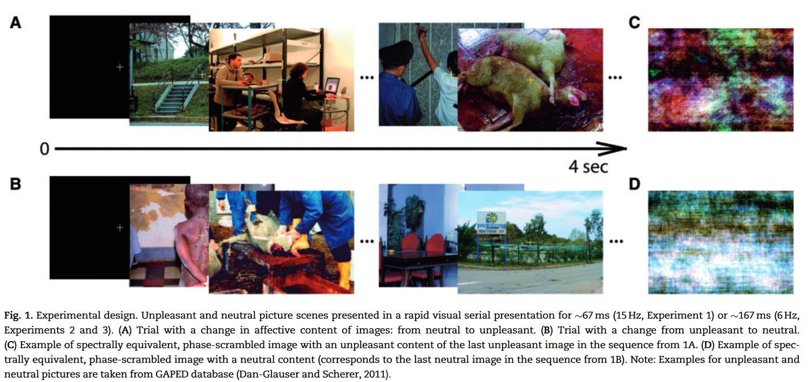
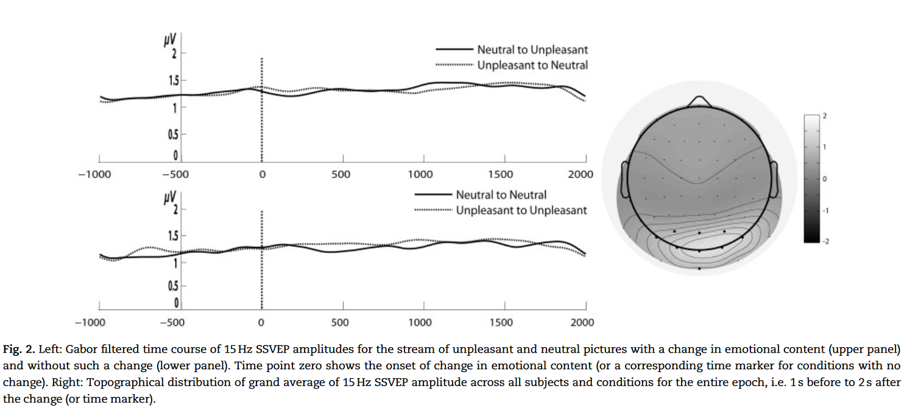
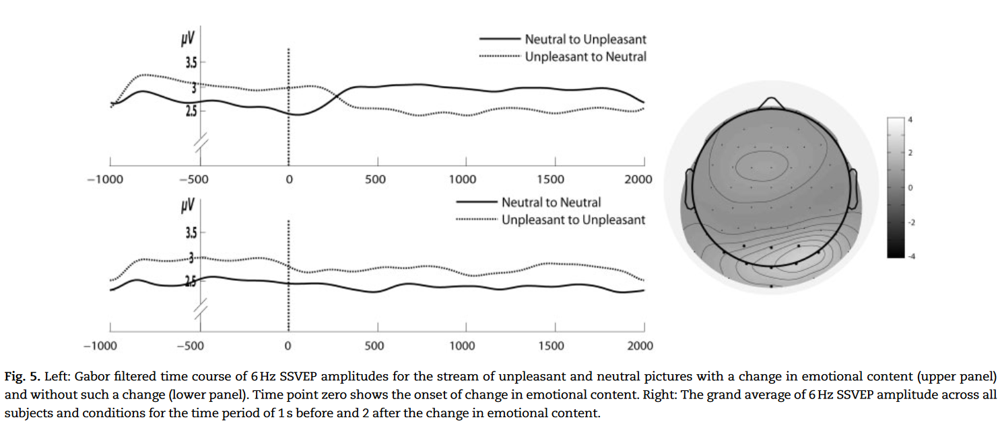
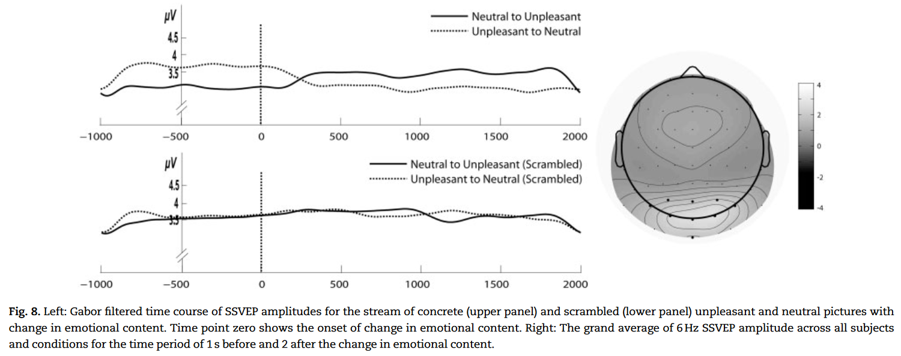

Affective facilitation of early visual cortex during rapid picture presentation at 6 and 15 Hz

摘要：稳态视觉诱发电位（SSVEP）是注意力资源分配的神经生理标记，其发生器位于早期视觉皮层，与中性复杂图像相比，情绪复杂图像的稳态视觉诱发电位振幅更大。复杂图像的情绪线索提取与 N1-EPN 复合体有关，其峰值潜伏期为 140-160 毫秒。我们测试了早期视觉皮层对情感性图片的神经促进是否需要单个图片的情感线索提取，即使是在呈现相同价值类别的图片流时也是如此。图片以 6 Hz（167 毫秒，允许提取）或 15 Hz（每幅图片 67 毫秒，导致后续图片处理中断）的频率显示。结果显示，与中性图像相比，情绪图像在 6 Hz 频率下的 SSVEP 振幅增强，但在 15 Hz 频率下没有差异。这并不是由于两种情绪类别之间的特征差异造成的。研究结果有力地表明，单个图像需要显示足够长的时间，以便情感线索提取能够驱动早期视觉皮层的情感神经调节。
SSVEP 是对与驱动刺激具有相同时间频率的闪烁刺激的连续振荡反应（Regan，1989 年），其主要发生器位于包括初级视觉皮层在内的早期视觉区域（M ̈ uller 等人，2006 年；Di Russo 等人，2007 年）
SSVEP 的振幅不仅在受试者选择性地注意某个位置或刺激时会得到可靠的增强（Morgan，1996 年；Andersen 等人，2009 年），而且在观看情绪图片而非自然图片时也会得到增强（Keil 等人，2005 年；2008 年）。因此，SSVEPs 是一种强大的工具，可用于追踪长时间内对刺激物的注意资源分配情况。
在研究情绪价值如何调节 SSVEP 振幅的典型研究中，参与者观看的是单张图片，这些图片通常取自国际情感图片系统（IAPS；Lang 等人，2005 年），以 10 Hz 左右的频率闪烁数秒（Keil 等人，2003 年；Keil 等人，2009 年）。这些图像通常描绘的是情绪愉快的场景（如情侣、婴儿）、不愉快的场景（如残缺的尸体、攻击场景）或中性场景（日常事件的图片）。如前所述，单张图片的情感内容可在刺激开始后 140 毫秒内迅速提取出来。然而，目前还不清楚 SSVEP 振幅调节是由每个呈现周期重复提取情绪内容驱动的，还是由整个试验中情绪图片价值的整合驱动的。
研究这个问题的一种方法是，在快速序列视觉呈现（RSVP）中，以不同的速率为每个周期呈现不同的图像。与遮蔽类似，RSVP 可以研究神经对处理资源的竞争（Keysers 和 Perrett，2002 年）。每个周期呈现不同图像的结果是，每幅图像对后续图像起到前向遮蔽作用，对前一幅图像起到后向遮蔽作用。事实证明，即使在感知要求较高的 RSVP 条件下，情绪唤醒图片也会 "偏向 "神经表征竞争，增强神经对情感刺激的反应（Jungho ̈ fer 等人，2001 年；Smith 等人，2006 年；Flaisch 等人，2008 年；Peyk 等人，2009 年）。例如，快速变化的情绪图像和中性图像序列可以在 EPN 中反映出情感辨别。这在每幅图像显示时间为 335 毫秒（Flaisch 等人，2008 年）或甚至 142 毫秒（Smith 等人，2006 年）的 RSVP 中得到了证明，而这正是 N1-EPN 复合物的时间范围。此外，在以 "不愉快-中性 "图像对交替呈现的图片中，区分不愉快和中性内容的能力被证明可以维持到 12 Hz（83 毫秒）的呈现率（Peyk 等人，2009 年）。有趣的是，该呈现时间是此类交替序列可观察到的 EPN 的上限。作者认为，图片序列（情感-中性）的消极和积极 EPN 成分的强烈叠加最终导致频率高于 12 Hz 的破坏性干扰效应。
最近，Alonso-Prieto 等人（2013 年）以不同的频率呈现 RSVP，每个周期呈现不同的中性面孔或在整个试验过程中呈现相同的面孔。这两种条件下的 SSVEP 振幅差异最大的频率是 6Hz（即每个周期 170 毫秒），而在高于 10 Hz 的频率下，两种条件下的 SSVEP 振幅没有差异。有趣的是，6 Hz 周期与 N170 分量的潜伏期相匹配，而 N170 分量是人脸辨别的神经标记（Bentin 等人，1996 年；Bentin 和 Deouell，2000 年；Rossion 和 Jacques，2008 年）。与 Peyk 等人（2009 年）类似，Alonso-Prieto 等人（2013 年）也认为，在较高的呈现率（>10 Hz）下，对单个人脸的精细处理可能会被后续人脸的呈现所干扰。
上述研究结果提出了以下问题： 情绪复杂图像对早期视觉皮层活动的神经促进作用是否需要允许提取每幅图像情绪线索的呈现率？如果是这样的话，SSVEP 振幅只有在 RSVP 率允许提取每幅图像的情绪线索时（N1-EPN 复合潜伏期附近）才会作为情绪的函数受到调节。因此，正如前面提到的一些研究表明的那样，当后面的图像扰乱了前面图像的处理过程时，SSVEP 的振幅就不会发生调节。但是，如果在整个刺激过程中，快速呈现的同一情绪类别的不同图像被整合为 "情绪性 "或 “中性”，那么较短的呈现时间就足以驱动不同的 SSVEP 振幅效应。此外，我们还旨在探索 SSVEP 振幅是否会对快速图片流中情绪内容的快速转换（从不悦到中性，反之亦然）产生敏感反应。在这里，我们引入了情绪内容变化的试验，即从中性到情绪变化或反之。通过这些试验，我们可以推断出 SSVEP 的振幅调制会随着情绪内容的提取而发生变化，这也支持了 6 赫兹或 15 赫兹 RSVP 的预期振幅差异（或振幅不变），分别只与情绪或中性图像有关。

本文通过三个实验证明
实验一：RSVP with 15 Hz 包括自然图像，情绪图像以及切换

结果：在 RSVP 数据流中呈现一幅不同的图像，时间短至 67 毫秒，并不会调节 SSVEP 的振幅作为情绪情感的函数。与中性图像相比，呈现同一情绪类别的单个图像，即使长达 4 秒钟，也不会促进早期视觉皮层对情绪图像的神经活动。每张图片的呈现时间如此之短，可能导致了破坏性的掩蔽效应，干扰了对前一张图片的情绪线索提取。在实验 2 中，呈现率增加到 167 毫秒（即 6 赫兹）。鉴于 N1-EPN 复合物的起始潜伏期（在 140 至 160 毫秒之间达到峰值），6 赫兹的 RSVP 不应导致下一幅图像对情绪线索提取的显著干扰，因此预计 SSVEP 的振幅将作为情绪价位的函数而受到调节。
实验二：RSVP with 6 Hz

结果：在我们的期望中，167 毫秒的时间增加了 SSVEP 的调制功能。源定位显示了两个重要结果：与 6 Hz RSVP 率相比，15 Hz RSVP 率激活的大脑皮层区域没有明显差异，而情绪图像的更大激活基本上发生在这些区域，表明早期视觉皮层的感觉增益。然而，一个可能的混淆因素是，相对于中性的 IAPS 图像，不愉快的图像往往具有特别突出的特征构成（如残缺尸体的红色血迹、物体的暗色形状等）。这些特征可能使不愉快的图像 salient，因此，吸引了更多的关注。尽管这种替代解释似乎不太可能，但由于实验 1 中也存在这些低级差异，因此在实验 3 中，我们额外呈现了相应图像的相位乱码版本，其中任何与内容相关的信息都被扭曲，但**低级物理参数（亮度、对比度、空间频率、颜色）**却得以保留（见方法和图 1C、D）。如果情绪性图像和中性图像在低级特征构成上的任何差异对实验 2 中观察到的情绪性 SSVEP 振幅调节起了重要作用，那么我们预计乱码图像也会产生类似的 SSVEP 效果。
实验三: RSVP with scrambled and intact pictures at 6 Hz

结果：我们重复了实验 2 的主要发现：对于完整的图像，SSVEP 振幅受情绪调节。重要的是，我们发现与不愉快的图片流相比，中性图片的乱码版本的 SSVEP 振幅没有差异。实验结果有力地表明，早期视觉皮层对不愉快图像的神经促进作用并不是由图像的低级特征组成（如颜色、空间频率）驱动的。
总结
在三个系列实验中，我们通过以 6 或 15 Hz 频率呈现复杂的中性或不愉快图像作为 RSVP 流，研究了 SSVEP 振幅调制与情绪情感的关系。之前的研究表明，SSVEP 振幅增强与早期视觉皮层的神经促进或感觉增益有关（Mu ̈ ller 等人，1998 年 a、b）（Mu ̈ ller 和 Hillyard，2000 年；Andersen 等人，2008 年）。我们发现，在 6 Hz（每幅图像 167 毫秒）频率下，与中性 RSVP 流相比，不愉快的 RSVP 流的 SSVEP 振幅会增强。与此相反，我们在 15 Hz 时没有发现这种效应，这表明 SSVEP效应的产生需要足够的时间来提取每幅图像的情绪内容。我们还研究了几种可能的混淆因素，如低级图像特性以及 6 赫兹和 15 赫兹 SSVEPs 的皮层生成器的差异。我们发现，这些干扰因素不太可能影响我们的结果。知觉遮蔽可能会打断提取图像情感内容的处理阶段（140-160 毫秒，N1-EPN 复合物潜伏期），最有可能解释 15 赫兹 SSVEP 情感调节缺失的原因（Keysers 和 Perrett，2002 年）。虽然同一情绪类别的图像呈现了几秒钟，但显然这些信息并没有整合在一起，似乎需要一定的呈现时间来提取情绪线索。与我们的研究结果一致，Codispoti 等人（2009 年）的研究表明，对于显示时间小于 80 毫秒并紧接着视觉遮罩的情绪图片，皮肤传导或 ERP 反应几乎没有可靠的情感调节。
相反，6 Hz 的频率可能足以识别每张图片的情感内容。解释 SSVEP 振幅效应的一种方法可能是，早期视觉皮层的神经促进作用依赖于来自高级皮层区域的再入机制（Keil 等人，2009 年）。因此，这可能是我们的研究结果的一种解释。信息的第一次前馈扫描（Lamme 和 Roelfsema，2000 年）必须到达与情绪线索提取相关的皮层区域。此前，对于复杂图像，我们在枕颞区和顶叶区发现了 EPN 的来源（Scho ̈ nwald 和 M ̈ uller，2014 年）。重要的是，来自这些高阶结构的反馈或再入射被证明可以调节视觉皮层的活动（Keil 等人，2009 年），因此，与中性图像相比，闪烁的情绪图像会导致 SSVEP 振幅增强。在情绪变化持续 350400 毫秒的试验中，振幅变化相对较慢，这也支持了这种较长的处理循环。Jungho ̈ fer 等人（2001 年）认为，150-200 毫秒的 RSVP 呈现时间足以使再入射投射到视觉皮层。在一项后续的 fMRI 研究中，这些作者报告说，与中性的 IAPS 图像相比，在 6 Hz 频率下呈现的情感性 IAPS 图像会增加顶叶内侧、颞叶下侧和枕叶外侧区域的活动（Jungho ̈ fer 等人，2006 年）。这种激活模式与上文提出的激活环路十分吻合。
如前所述，我们还调查了一些可能的混淆因素。首先，情绪效应并非由低级图像特征（如颜色、空间频率）驱动。如果刺激的情感是由这些低层次的图像特征传达的，而不涉及整体的图像主题，那么在相位乱码图像中也会观察到 SSVEP 情感调节。相反，扭曲的不愉快和中性图像的呈现并没有对 SSVEP 产生任何影响。另一种可能是，在 15 赫兹 RSVP 中，"无效应 "是由于习惯化造成的，因为在整个实验过程中，单张图片在这里呈现了 120 次，而在 6 赫兹 RSVP 中只呈现了 64 次。为了控制这种情况，我们计算了在有变化的试验中 15 Hz 流的 SSVEP 振幅的一半，并通过重复测量方差分析对其进行了检验，该方差分析包含了受试内因子 情绪内容（不愉快/中性）和一半（第一次/第二次）。我们发现实验的前半部分和后半部分之间没有差异（所有 Fs 均小于 1）。最后，15 Hz 和 6 Hz SSVEPs 的皮层发生器都位于早期视觉皮层，因此不太可能解释不同研究中观察到的不同 SSVEP 效应。如图 7B 所示，情绪激动
然而，目前的实验只包括不愉快的 IAPS 图像，因此我们无法将我们的发现推广到所有情绪图像。因此，在今后的研究中，我们应该将实验设计扩展到令人愉快的 IAPS 图像，以便对令人不愉快和令人愉快的图像进行直接比较。在我们之前的一项研究中，我们发现在分散注意力的范式中，令人愉快和令人不愉快的 IAPS 图像之间没有差异，因此我们预计在这里也不会出现统计学上的显著差异（Hindi Attar 等人，2010 年）。总之，我们的研究结果与其他一些研究结果一致，支持这样一种观点，即情绪图片的呈现持续时间对于早期视觉皮层活动的神经促进作用至关重要，这种神经促进作用导致情绪图片的 SSVEP 振幅增加，而中性图片的呈现频率为 6 Hz（即每幅图片 167 毫秒）。如果与内容提取相关的区域的再入射在早期视觉皮层激活中起着重要作用，那么对于复杂图像，所需的关键时间定义了 N1-EPN 复合物的潜伏期。新图像中断了内容提取，即使该图像属于同一情绪类别，似乎也会扰乱个体的内容提取。我们的研究结果清楚地表明，要驱动早期视觉区域的 SSVEP 情感调节，似乎需要对每幅图像进行情感线索提取，而不是情感价值的整合过程。因此，我们的研究结果进一步揭示了情感刺激处理的速度，并强调了 SSVEP 是研究情感刺激感知过程中视觉皮层活动变化的有力工具。
名词
- EPN: “Early Posterior Negativity (EPN)” 的中文翻译是“早期后脑负性”或“早期后脑负波”。这是一种神经生理事件，出现在人脑对特定视觉刺激做出反应时，尤其是那些具有情绪或注意力重要性的刺激。它是一种事件相关电位（ERP），是大脑对特定感官、认知或运动事件的可测电反应。